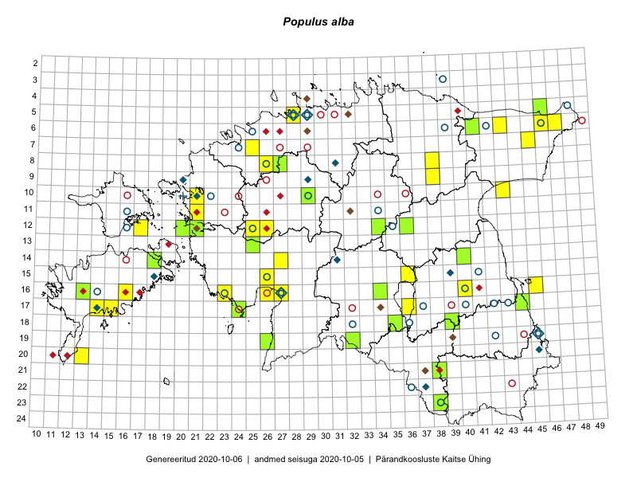

Populus alba
Uuendatud: 2016-12-08
Kaardile koondatud taksonid: Populus alba L.

Kaart põhineb 47 vaatlusel. Taime on leitud 32 ruudust.
| Ruut | Vaatleja(d) | Vaatlusaeg | Kirje tüüp | Viide andmebaasikirjele |
|---|---|---|---|---|
| 06-43 | Tiit Hallikma, Toomas Kukk | 2015-05-30 | punkt | vaata PlutoFis |
| 07-45 | Ott Luuk, Hannes Pehlak | 2015-07-22 | ruut/ala | vaata PlutoFis |
| 06-41 | Toomas Kukk, Peedu Saar | 2014-09-12 | ruut/ala | vaata PlutoFis |
| 13-25 | Indrek Tammekänd, Katrin Aavik | 2015-06-15 | punkt | vaata PlutoFis |
| 05-28 | Erkki Otsman, Sergei Smirnov | 2015-06-26 | ruut/ala | vaata PlutoFis |
| 21-38 | Eeva-Maria Jeletsky, Tarmo Niitla | 2015-08-12 | ruut/ala | vaata PlutoFis |
| 18-39 | Kai Rünk, Ülle Jõgar, Illi Tarmu | 2015-05-19T07:00Z | ruut/ala | vaata PlutoFis |
| 15-36 | Toivo Sepp, Eerik Leibak | 2015-05-13 | ruut/ala | vaata PlutoFis |
| 16-13 | Mari Reitalu, Oliver Parrest | 2015-07-27 | ruut/ala | vaata PlutoFis |
| 15-36 | Toivo Sepp, Eerik Leibak | 2015-05-13 | punkt | vaata PlutoFis |
| 18-39 | Kai Rünk, Ülle Jõgar, Illi Tarmu | 2015-05-19 | punkt | vaata PlutoFis |
| 17-14 | Sirje Azarov, Mari Reitalu | 2015-04-27 | ruut/ala | vaata PlutoFis |
| 17-14 | Sirje Azarov, Mari Reitalu | 2015-05-27 | punkt | vaata PlutoFis |
| 20-13 | Oliver Parrest | 2015-08-15 | ruut/ala | vaata PlutoFis |
| 09-38 | Karin Kikas, Elle Rajandu | 2015-06-01 | ruut/ala | vaata PlutoFis |
| 09-38 | Karin Kikas, Elle Rajandu | 2015-06-01 | punkt | vaata PlutoFis |
| 12-25 | Aat Sarv | 2015-05-27 | ruut/ala | vaata PlutoFis |
| 08-38 | Karin Kikas, Elle Rajandu | 2015-06-02 | ruut/ala | vaata PlutoFis |
| 08-38 | Karin Kikas, Elle Rajandu | 2015-06-02 | punkt | vaata PlutoFis |
| 16-13 | Mari Reitalu, Oliver Parrest | 2015-07-27 | punkt | vaata PlutoFis |
| 17-15 | Karin Kikas, Elle Rajandu | 2015-07-22 | ruut/ala | vaata PlutoFis |
| 17-15 | Karin Kikas, Elle Rajandu | 2015-07-22 | punkt | vaata PlutoFis |
| 18-35 | Helle Mäemets, Mare Leis | 2015-06-24 | ruut/ala | vaata PlutoFis |
| 15-36 | Helle Mäemets, Mare Leis | 2015-07-06 | ruut/ala | vaata PlutoFis |
| 17-36 | Helle Mäemets, Mare Leis | 2015-06-25 | ruut/ala | vaata PlutoFis |
| 04-40 | Kaili Orav, Silvia Pihu | 2015-07-21 | ruut/ala | vaata PlutoFis |
| 17-36 | Malle Timm | 2015-08-07 | punkt | vaata PlutoFis |
| 17-36 | Malle Timm | 2015-08-12 | punkt | vaata PlutoFis |
| 11-21 | Hanna-Eliisa Luts, Tõnu Ploompuu | 2015-08-13 | ruut/ala | vaata PlutoFis |
| 08-26 | Aat Sarv | 2015-08-13 | ruut/ala | vaata PlutoFis |
| 18-35 | Helle Mäemets, Mare Leis | 2015-06-24 | ruut/ala | vaata PlutoFis |
| 12-26 | Andrus Jair, Tõnu Ploompuu | 2015-05-17 | ruut/ala | vaata PlutoFis |
| 23-38 | Rein Kalamees, Eerik Leibak | 2016-06-16 | ruut/ala | vaata PlutoFis |
| 12-21 | Liina Oja, Rein Kalamees | 2016-07-05 | punkt | vaata PlutoFis |
| 06-46 | Erkki Otsman, Sergei Smirnov | 2016-06-17 | ruut/ala | vaata PlutoFis |
| 14-40 | Karin Kikas, Elle Rajandu | 2016-07-01 | punkt | vaata PlutoFis |
| 14-18 | Sirje Azarov, Mari Reitalu | 2016-08-09 | punkt | vaata PlutoFis |
| ? | Erkki Otsman, Sergei Smirnov | 2016-06-17 | punkt | vaata PlutoFis |
| 07-25 | Helle Mäemets, Tiina Elvisto | 2016-07-05 | ruut/ala | vaata PlutoFis |
| ? | Helle Mäemets, Tiina Elvisto | 2016-07-05 | punkt | vaata PlutoFis |
| 16-40 | Peedu Saar | 2016-05-22 | punkt | vaata PlutoFis |
| 05-28 | Kadi-Liis Kesler, Tiina Elvisto | 2015-05-12 | ruut/ala | vaata PlutoFis |
| 16-40 | Peedu Saar | 2016-05-22 | ruut/ala | vaata PlutoFis |
| 05-46 | Kadi-Liis Kesler, Tiina Elvisto | 2015-07-30 | ruut/ala | vaata PlutoFis |
| 12-20 | Meeli Mesipuu, Maret Gerz | 2015-08-25 | ruut/ala | vaata PlutoFis |
| 10-43 | Hannes Pehlak, Ott Luuk | 2016-07-29 | ruut/ala | vaata PlutoFis |
| 19-32 | Jaak-Albert Metsoja, Mari Metsoja, Lena Neuenkamp | 2016-07-18 | ruut/ala | vaata PlutoFis |